Content designer & UX writer · Maker · Blaricum, Netherlands
Content design and handmade bags by Iara Lucena
One thread, two crafts.
I'm Iara Lucena, a content designer and UX writer in the Netherlands. For 10+ years I've shaped content for digital products at companies like Booking.com, Miro and now Nebius, turning ideas, goals and requirements into clear words that guide users in a human, relevant way.
I also sew and crochet one-of-a-kind bags and accessories by hand in Blaricum, from bold fabrics, new and thrifted.
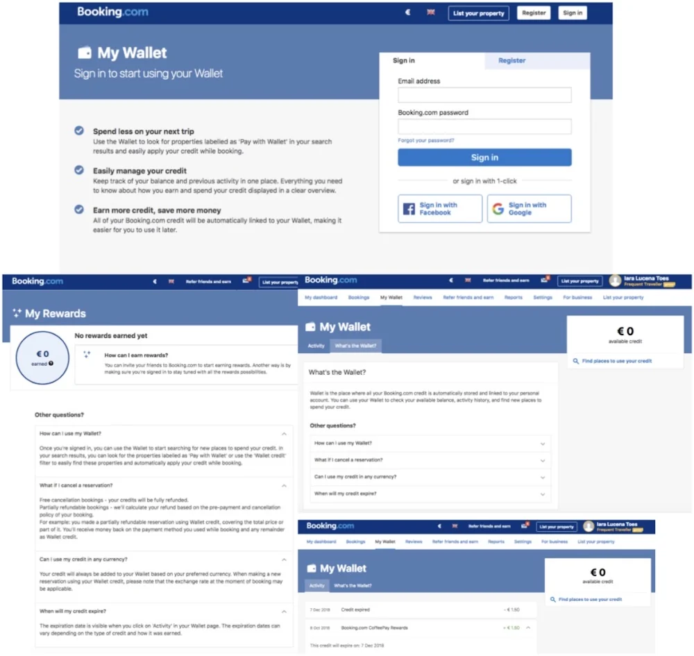

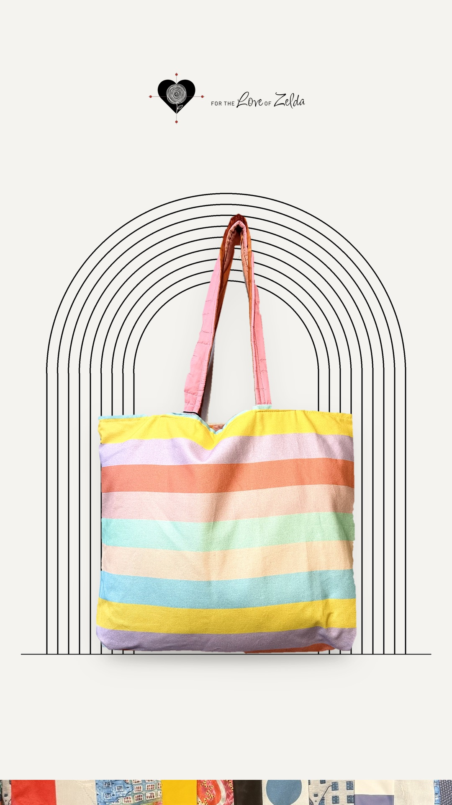
This is iaracreates
Creativity is the thread that runs through everything.
Everything I make is born from a love of maximalism, bold prints, joyful colour, and as little waste as possible along the way. Balancing things out on the other side, everything that I write is meant to be clear, simple, and concise.
Content design
I transform ideas, goals and requirements into clear words that guide users in a human, relevant way.
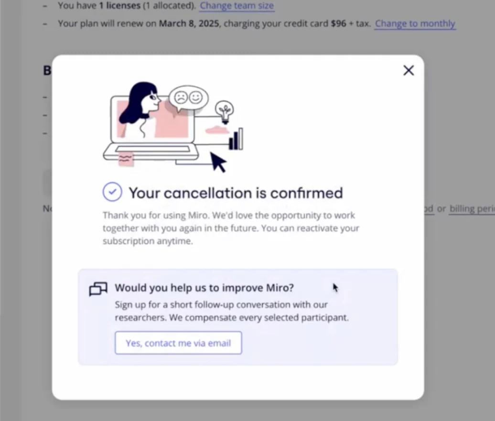
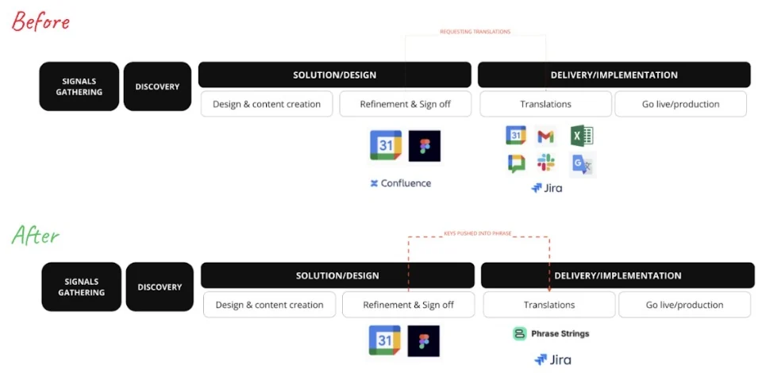
Handmade
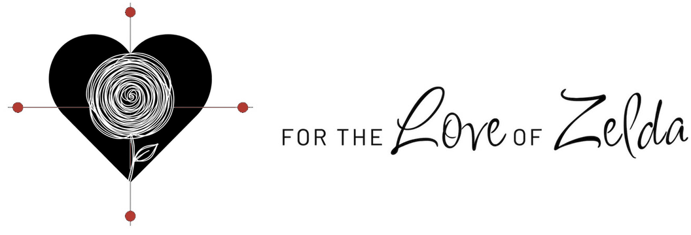
A collection by iaracreatesI love to create beautifully odd things: bags and accessories, each one of a kind, sewn and crocheted in Blaricum.
New on the wall
See all handmade pieces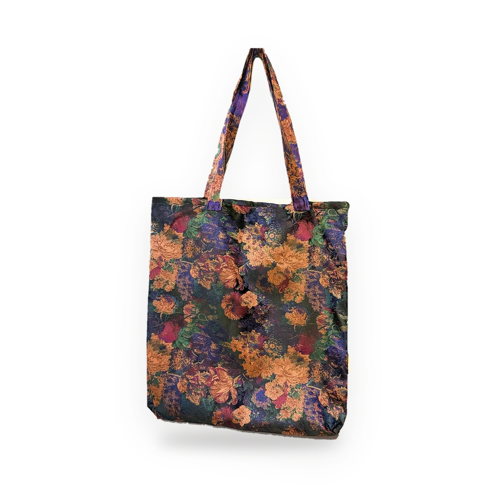
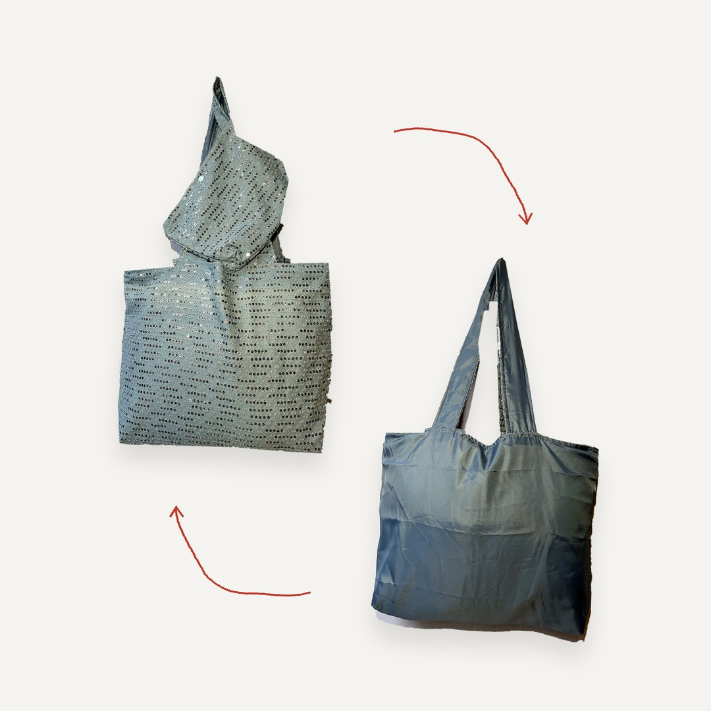
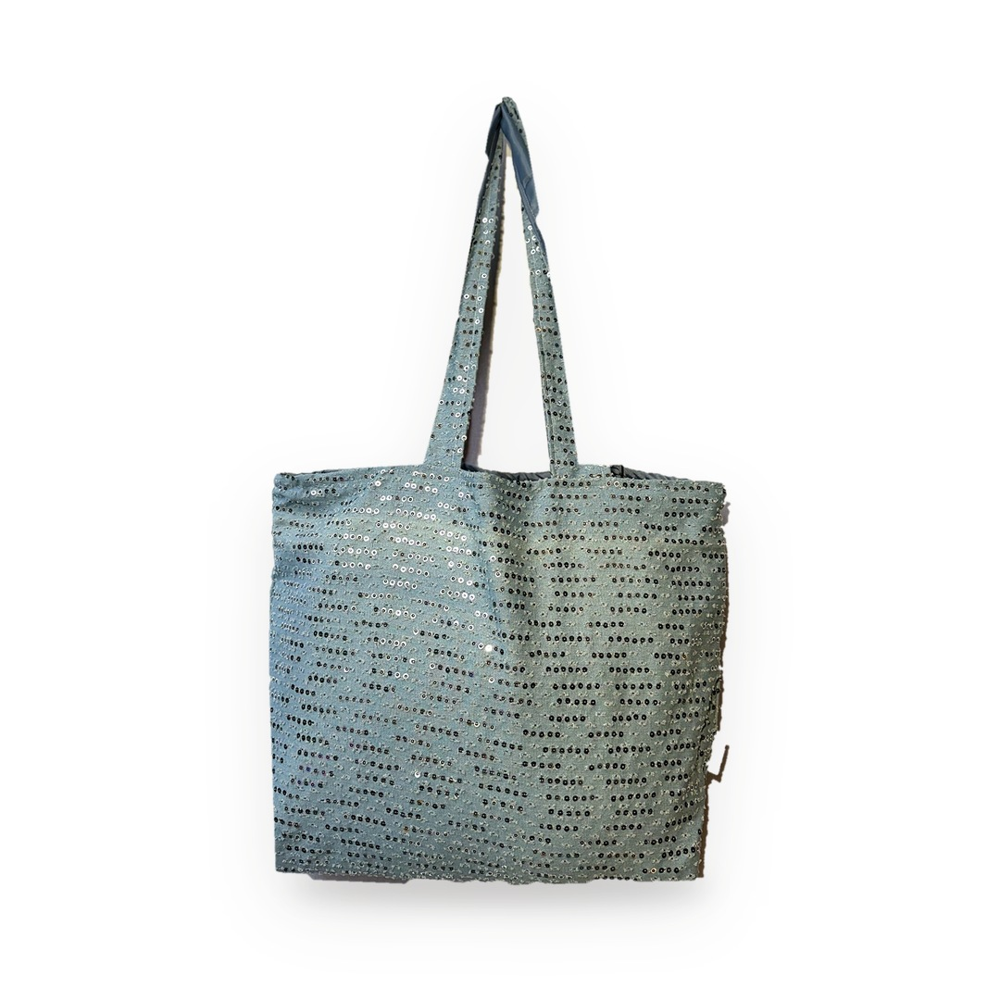
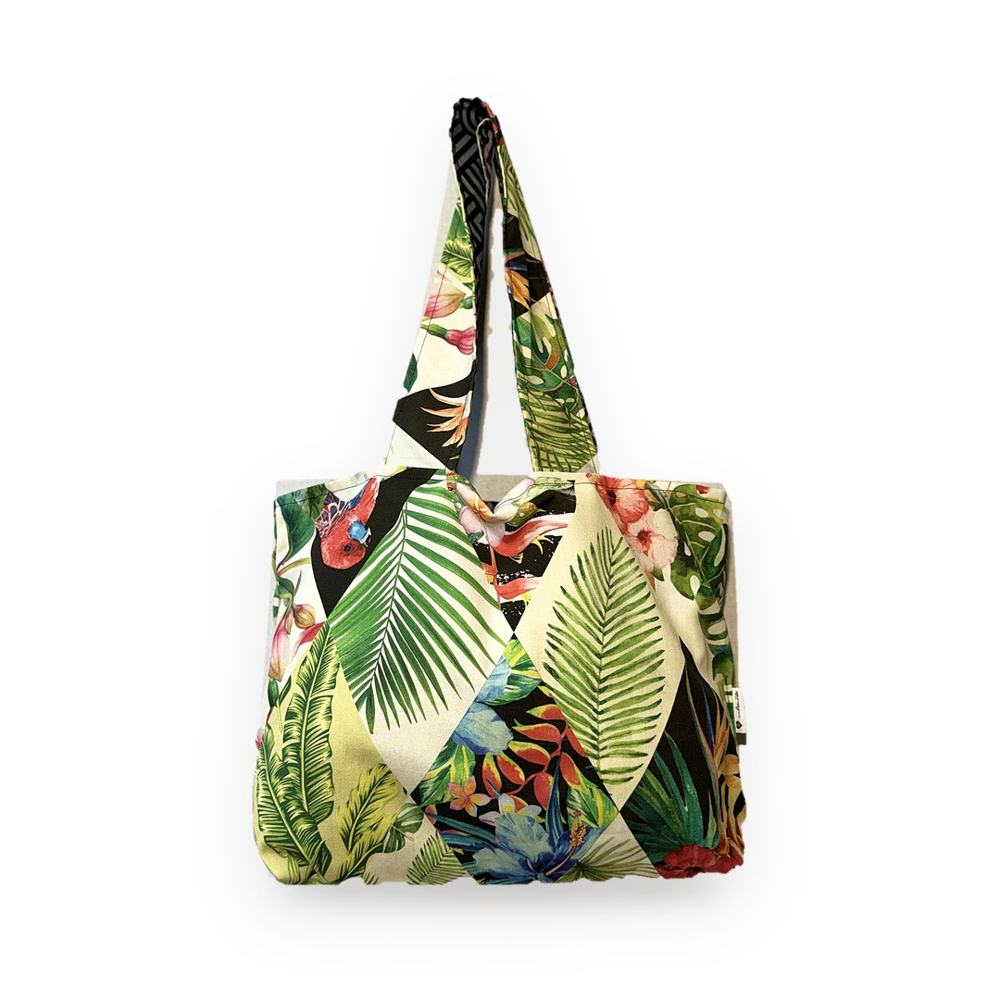
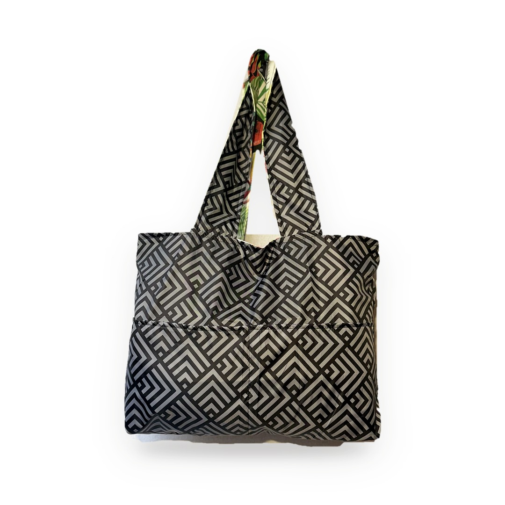
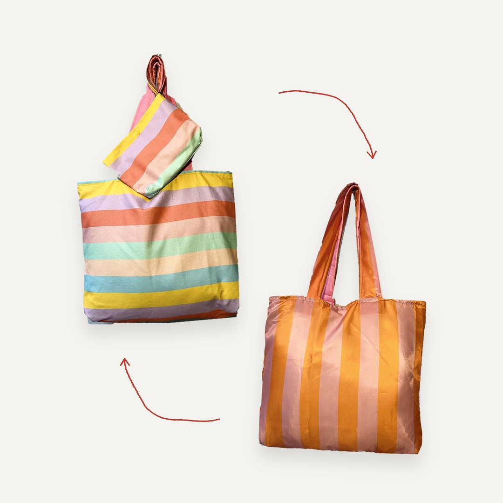
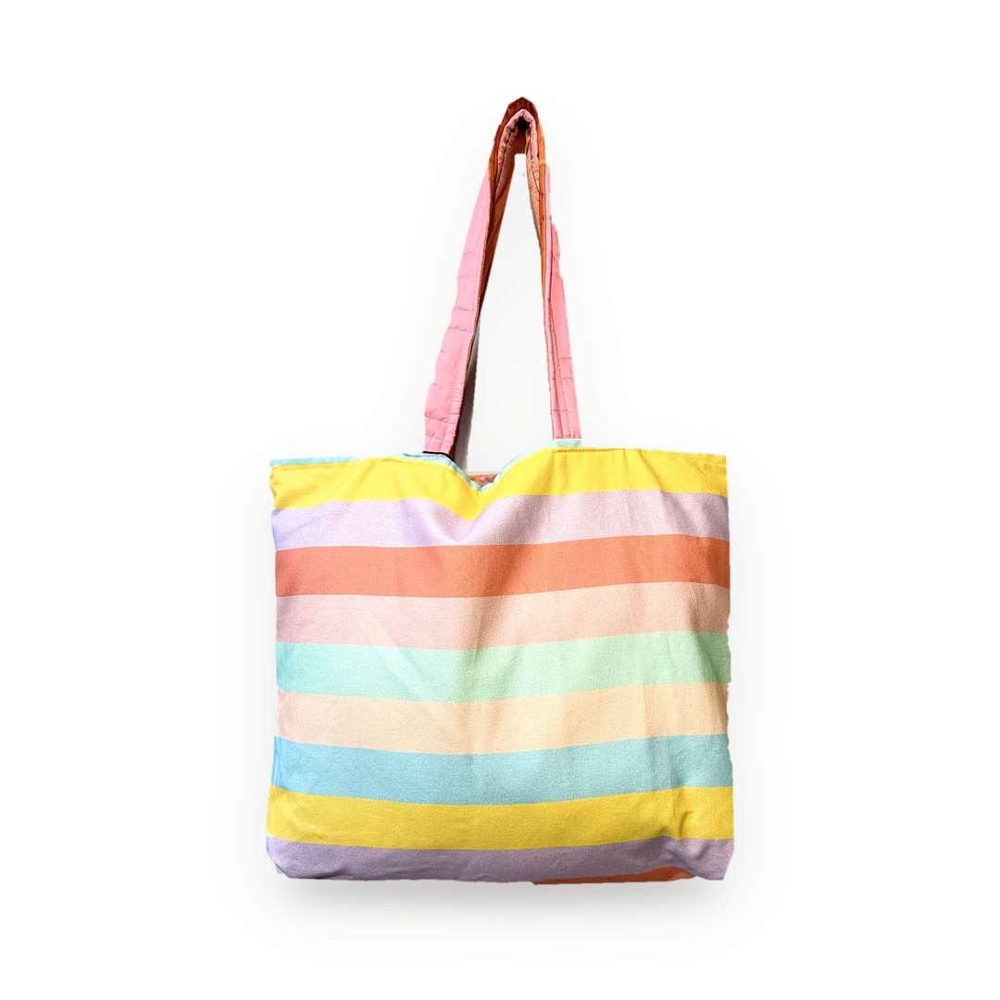
Have a project in mind, or saw a piece you love?
Ask me about content design work, or about any piece. Nothing here is sold online, so just get in touch and I'll tell you more.